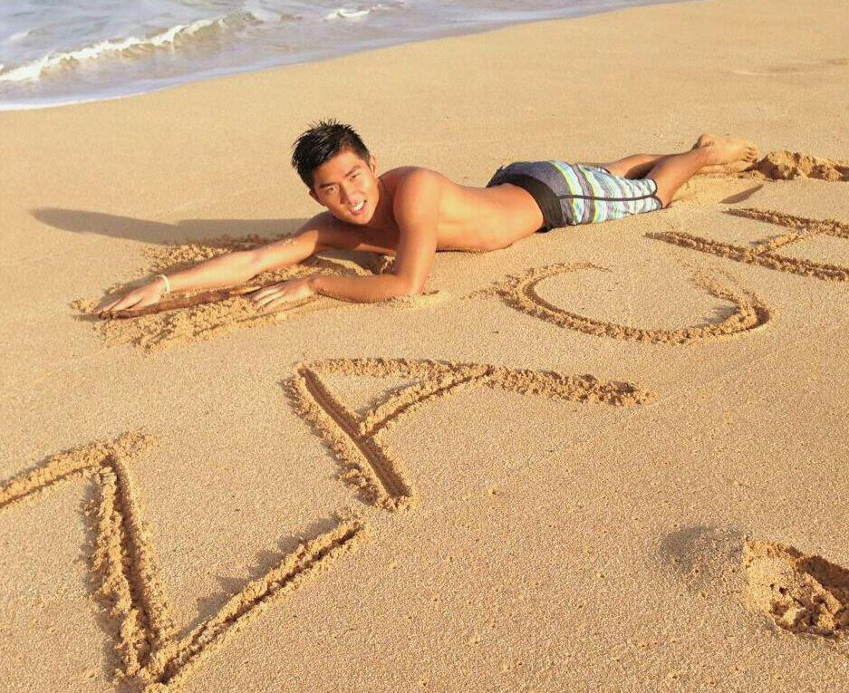

About Me
I am a young local artist in the beautiful island of Hawaii. Starting in my later years of high school, I began to build an interest in drawing. After graduating from high school, I decided to pursue a career in art and took classes at Leeward Community College, which is where I found a true passion for painting and where my story as an artist starts. Finding an appreciation for the beauty that Hawaii has to offer, I love to paint the scenery and more recently, portraits of friends and family.
 During my free time I love to do just about anything that you could expect from a guy living
in Hawaii. I go out to eat a lot of the ono dishes around the island and explore when the
weather is right. My favorite hobby, or lifestyle choice I should say, is surfing. If I'm not
in my workshop painting up something new, I am on my surfboard catching the greatest waves in
the world until the sun sets. In fact, the greatest moments in my life that have
inspired me to pursue my dream as an artist are the ones I've spent with my favorite cousin
and role model Cheyne.
During my free time I love to do just about anything that you could expect from a guy living
in Hawaii. I go out to eat a lot of the ono dishes around the island and explore when the
weather is right. My favorite hobby, or lifestyle choice I should say, is surfing. If I'm not
in my workshop painting up something new, I am on my surfboard catching the greatest waves in
the world until the sun sets. In fact, the greatest moments in my life that have
inspired me to pursue my dream as an artist are the ones I've spent with my favorite cousin
and role model Cheyne.
- Designed by: Cheyne Funakoshi and Kevin Yean
- ©: ZY Artwork 2015-2015 All Rights Reserved